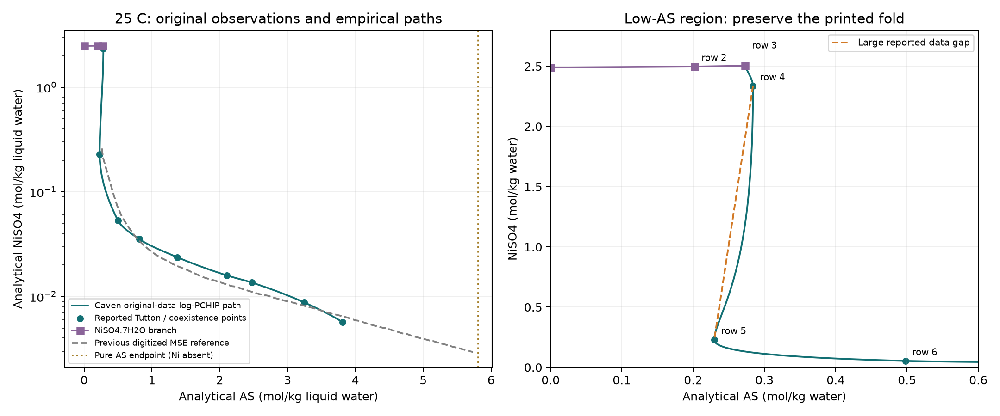

Ni–Cd Tutton phase equilibria
Reconstructed Ni sulfate–ammonium sulfate phase boundaries, aqueous activity checks and conditional crystallisation balances.

Result scope
Interpolation is not a full thermodynamic validation. The water-reference calculations do not predict the actual acidic ethanol-containing Ni–Cd leachate. Cd selectivity is not established by this reconstruction.